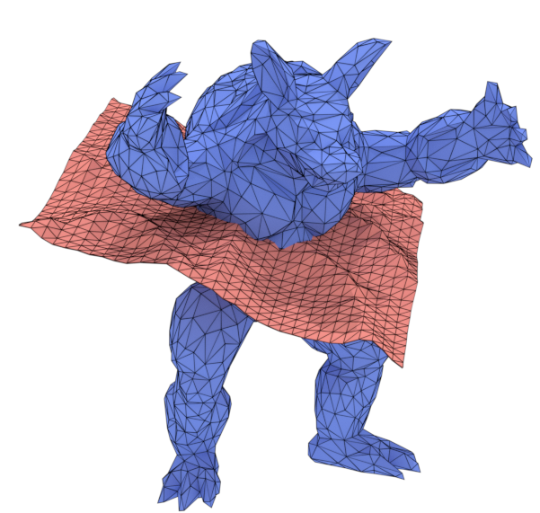
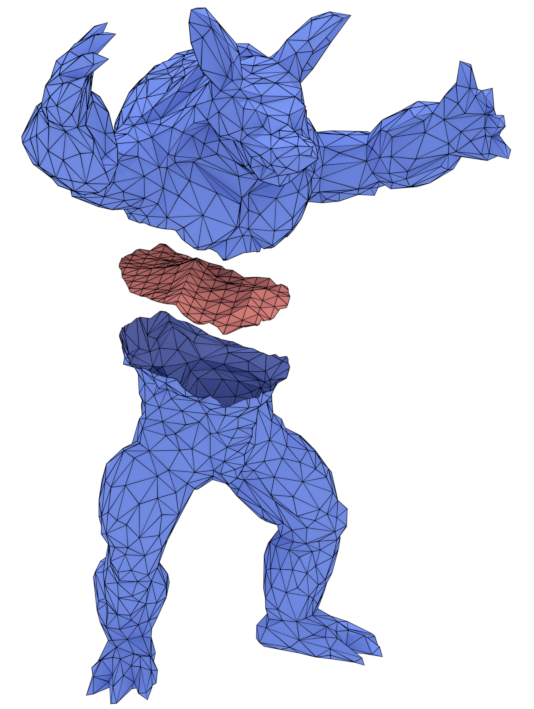
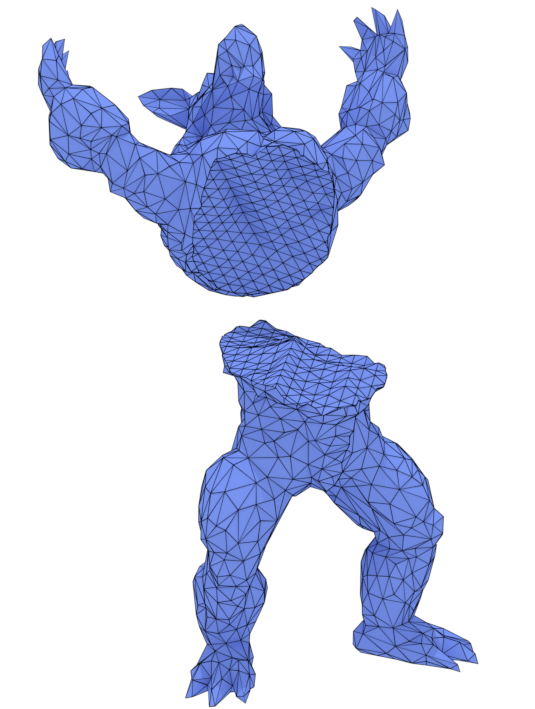

FAQ¶
Is MCUT restricted to triangle meshes?
No. MCUT is designed to work with meshes that are made with arbitrary–but planar–polygons. These polygons can be convex or convex, so triangle meshes are just a special case.
Is it possible that MCUT can fail to fill holes in sliced objects?
MCUT can never fail to fill holes because the output meshes are produced by resolving/tracing the halfedge connectivity of input meshes. This is different from winding numbers and improves overall robustness since numerical operations are performed only when resolving polygon intersections.
Does MCUT do automatic triangulation after cutting e.g. for rendering?
No. Polygon/mesh triangulation is reserved for specialised tools and libraries that are separate from MCUT.
Can MCUT cut more than two meshes at the same time?
MCUT is designed to work at-most with two meshes at a time. This simplifies reasoning about the implementation to reduce redundant complexity.
I wish to slice a tetrahedral/hexahedral mesh using MCUT - is this possible?
In general, no. This is because tetrahedral/hexahedral meshes are non-manifold, which is beyond the scope of MCUT.
However, you may be able to use MCUT as a building block to cut individual cells (tetrahedra/hexahedra) of your mesh with the given cutting surface. This of course implies that you must then resolve the connectivity of your non-manifold mesh manually, effectively building on top of MCUT.
Can the cut surface be a non-manifold mesh?
No. The cut surface must always be a manifold surface mesh.
What constitues a valid mesh for MCUT?
A valid mesh is a connected component which is a manifold surface that has no self-intersections involving polygons along the cut. We take the definition of manifold to be a mesh where every edge is incident to (i.e. used by) one or two faces.
Where can I find the documentation for using MCUT?
Function documentation is provided in the main header file, which is include/mcut/mcut.h. There are three options for viewing this documentation: 1) building the docs with doxygen (see Compilation), 2) doing a Ctrl+F on mcut.h in your favourite text editor/IDE, and 3) using the github search function in the MCUT repository.
The tutorials are also useful.
What is a ‘mesh’?
A mesh is a data structure consisting of a set of vertices, edges, faces and topological relations between them. This data structure defines how each element is stored.
What is a ‘connected component’?
A connected component is the general name given to a mesh. In particular, it has the property that for any two faces in this mesh, there is a path of adjacent faces such that all edges between two consecutive faces of the path are not marked as constrained.
What is a ‘source mesh’?
A source mesh is the mesh you want to cut.
What is a ‘cut mesh’?
A cut mesh is the mesh you want to cut with (the knife tool).
What is a ‘fragment’?
A fragment is a connected component that resulted from partitioning the source mesh - sealed or unsealed.
What is a ‘patch’?
A patch is a connected component that is used to a seal hole in a fragment. It is a piece produced from the cut mesh.
What is a ‘seamed connected component’?
A connected component produced by MCUT which is same as an input mesh (source mesh or cut mesh) except that it has new edges which are placed according to the cut.
What is the meaning of ‘fragment location’?
The relative location of a fragment with respect to the cut mesh, which is determined by the face orientation (winding order) of the cut mesh.
Example: A tetrahedron (source mesh) that is sliced in the middle with a quad (cut mesh), where the apex lies in the normal direction of the quad. In this case, the apex fragment is considered ‘above’, while the 6 sided fragment is considered ‘below’.
What is the meaning of ‘patch location’?
The relative location of a patch with respect to the source mesh, which is determined by the face orientation (winding order) of the source mesh. Intuitively, the subset of cut mesh polygons–after clipping–that lie inside (say, a watertight) source mesh are considered ‘inside’, and those not as ‘outside’.
Must all input meshes have a consistent winding order?
Yes. All input meshes must have a consistent winding order, but this order can be either clock-wise (CW) or counter clock-wise (CCW). Note however, that the source mesh can be CCW while the cut mesh is CW, and vice-versa.
Degenerate inputs (not in general position)
MCUT expects that all polygon intersections can be reduced to edge-face intersections.
A key objective in the design of MCUT is to resolve the combinatorial structure of the meshes being cut by using their connectivity. Using edge-face intersections tests compliments our design choice to work with connectivity by: 1) constraining the sources of roundoff error (during polygon intersection tests) for improving robustness, and 2) enabling a general solution to the ‘mesh arrangements’ problem, catering to numerous mesh configurations such as mesh slicing with arbitrary manifold shapes and surfaces.
Thus, MCUT is designed for inputs in “general position”, but also provides a crude workaround for degenerate inputs. Here the notion of general position is defined with respect to the orientation predicate: a set of points is in general position if no three points (where two points are from the same input mesh) are collinear, or that no four points (where three points from the same input mesh) are coplanar.
The definition of “inputs” is relaxed here. Specifically by input, we mean the pairs of polygons from the source-mesh and cut-mesh that are tested for intersection. The polygons that are not intersecting in any form (i.e. even not touching) do not have to be in general position.
MCUT will use numerical perturbation of the cut-mesh so as to bring the input into general position. In such cases, the idea is to solve the cutting problem not on the given input, but on a nearby input. The nearby input is obtained by perturbing the given input. The perturbed input will then be in general position and, since it is near the original input, the result for the perturbed input will hopefully still be useful. This is justified by the fact that the task of MCUT is not to decide whether the input is in general position but rather to make perturbation on the input (if) necessary within the available precision of the computing device.
Perturbation is enabled by including the appropriate MC_DISPATCH_ENFORCE_GENERAL_POSITION flag when calling the mcDispatch function, which is the crude workaround for degenerate inputs.
Note: MCUT does not use symbolic perturbation since correct labelling of polygon intersection points is dependent on orientation predicates giving true answer i.e. orient3d and orient2d must return one of three values {-1, 0, +1} and not two {-1 or +1}, which is the essence of symbolic perturbation. The reason for MCUT doing this is that it allows us to identify intersection points ‘topologically’ and ensure that the entire implementation is free of numerical operations, except to compute intersection points. Thus, each intersection point can be uniquely identified according to the faces (from the source mesh and cut-mesh) that meet there, as well as the (half)edge that intersected a face to yeild that point.


